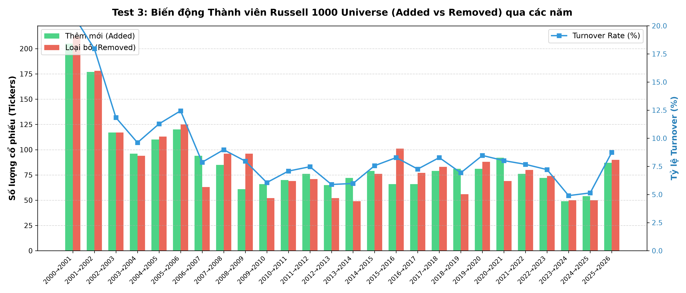

📊 Phase 1 — Data Pipeline & Validation Report
Predict Daily Return Rankings · Russell 1000 PIT (2000–2026) · CO3101 HCMUT
Ngày thực hiện: 01/10/2026 – 03/10/2026
Bài toán
Dự án xây dựng mô hình ML để dự báo xếp hạng lợi nhuận ngày T+1 của các cổ phiếu trong Russell 1000 theo dạng cross-sectional ranking. Mô hình không dự báo giá hay lợi nhuận tuyệt đối, mà chỉ xếp thứ tự "cổ phiếu nào sẽ outperform/underperform so với các cổ phiếu khác trong cùng ngày giao dịch".
Tại sao cần Phase 1
Trước khi train bất kỳ model nào, cần đảm bảo dữ liệu sạch, đúng, không có look-ahead bias. Các vấn đề dữ liệu nếu không phát hiện sẽ dẫn đến:
- Survivorship bias: Chỉ train trên các cổ phiếu "sống sót" → model overfit với winners
- Look-ahead bias: Target variable chứa thông tin tương lai → back-test giả tạo tốt
- Schema error: Column names sai → code feature engineering bị lỗi âm thầm
- Data integrity issue: High < Low, Price ≤ 0 → features tính sai
Data Lock Rule
Pipeline Flow
Schema v4 (Lowercase)
# Tất cả Parquet files sau processing đều dùng lowercase columns
# Đây là thay đổi quan trọng từ schema cũ (Close, Adj Close, High, Low, Volume)
columns = {
'date': datetime, # Trading date
'ticker': str, # QuantConnect symbol (e.g., "AAPL", "BRK-B")
'open': float64, # Open price (SplitAdjusted)
'high': float64, # High price (SplitAdjusted)
'low': float64, # Low price (SplitAdjusted)
'close': float64, # Close price (SplitAdjusted, INCLUDES dividends)
'volume': float64, # Trading volume
'year': int # Partition year
}
# LƯU Ý: adj_close ≡ close (SplitAdjusted mode bakes dividends into close)
# → KHÔNG CẦN adj_close trong Feature EngineeringMatrix Format (in_sample/)
# 6 file parquet trong data/processed/in_sample/
# Mỗi file: Index = Date (6,021 rows), Columns = Ticker (2,852 cols)
# NaN = cổ phiếu không active trong ngày đó
close = pd.read_parquet("in_sample/close.parquet") # shape (6021, 2852)
high = pd.read_parquet("in_sample/high.parquet")
low = pd.read_parquet("in_sample/low.parquet")
volume = pd.read_parquet("in_sample/volume.parquet")
returns = pd.read_parquet("in_sample/returns.parquet") # close.pct_change()
forward_returns = pd.read_parquet("in_sample/forward_returns.parquet")# returns.shift(-1)Mục đích
Kiểm tra chất lượng cơ bản của Universe data — đây là foundation của toàn bộ pipeline. Nếu universe data sai (NULL, trùng, format sai), toàn bộ OHLCV download và feature engineering sẽ bị sai theo.
Logic & Thao tác
- Load 27 file JSON, mỗi file chứa list tickers của 1 năm
- Với mỗi ticker trong mỗi năm: kiểm tra NULL, empty string (''), whitespace thừa
- Kiểm tra duplicate trong cùng năm (mỗi cổ phiếu chỉ được có 1 lần/năm)
- Phân loại format: dấu chấm (BRK.B), dấu gạch (BRK-B), bình thường
import json, os
for year in range(2000, 2027):
with open(f"russell1000_{year}.json") as f:
tickers = json.load(f)
null_cnt = sum(1 for t in tickers if t is None)
empty_cnt = sum(1 for t in tickers if isinstance(t, str) and t.strip() == "")
space_cnt = sum(1 for t in tickers if isinstance(t, str) and t != t.strip())
dup_cnt = len(tickers) - len(set(tickers))
dash_cnt = sum(1 for t in tickers if isinstance(t, str) and '-' in t)Kết quả thực tế
| Kiểm tra | Kết quả | Status |
|---|---|---|
| Tổng tickers quét (27 năm) | 26,919 lượt | INFO |
| NULL / Invalid | 0 | PASS |
| Empty ('') | 0 | PASS |
| Whitespace thừa | 0 | PASS |
| Duplicate trong cùng năm | 0 | PASS |
| Dash format (BRK-B, BF-B) | 45 lượt (2008–2015) | PASS |
Kết luận & Ý nghĩa
45 tickers dạng dash (BF-B, BRK-B...) là format chuẩn của QuantConnect cho cổ phiếu có nhiều share class. Pipeline đã xử lý đúng. Universe data sạch hoàn toàn — không có vấn đề gì cần sửa.
Mục đích
Xác nhận tính Point-In-Time (PIT) của universe: danh sách cổ phiếu thực sự thay đổi theo từng năm đúng không? Nếu turnover = 0% thì universe là static (sai). Nếu turnover quá cao (>50%) thì data bị lỗi.
Logic & Thao tác
- Load toàn bộ 27 JSONs vào dict
{year: set(tickers)} - Tính Entry/Exit year-over-year:
entry = current - prev; exit = prev - current - Turnover = (|entry| + |exit|) / 2 / |prev| × 100%
- Thống kê blue-chip (tickers trong tất cả 27 năm), flicker (vào rồi ra lại), one-hit
universes = {}
for yr in range(2000, 2027):
with open(f"russell1000_{yr}.json") as f:
universes[yr] = set(json.load(f))
annual_results = []
for yr in range(2001, 2027):
prev, curr = universes[yr-1], universes[yr]
entry = curr - prev
exit_ = prev - curr
turnover = (len(entry) + len(exit_)) / 2 / len(prev) * 100
annual_results.append({'year': yr, 'entry': len(entry),
'exit': len(exit_), 'turnover_pct': turnover})Kết quả thực tế
| Năm đáng chú ý | Turnover | Nguyên nhân |
|---|---|---|
| 2001 | 21.01% | Dot-com bust — nhiều tech companies phá sản |
| 2002 | 18.04% | Tiếp tục Dot-com bust + Worldcom/Enron scandal |
| 2009 | ~11% | Post-GFC — ngân hàng/tài chính bị loại |
| 2020 | ~9% | COVID — một số công ty bị loại/thêm mới |
| 2024 | 4.90% | Thấp nhất — thị trường ổn định |
Kết luận & Ý nghĩa
Turnover 8.84%/năm phù hợp với lịch sử FTSE Russell (8–12%). Điều này chứng minh PIT Universe hoạt động đúng — danh sách cổ phiếu thực sự thay đổi hàng năm theo đúng quy tắc reconstitution của FTSE Russell.
Hàm ý cho ML: Turnover 8.84%/năm → nên dùng Walk-Forward CV với annual rebalancing. Training window 5 năm là hợp lý (universe thay đổi ~44% sau 5 năm).

Mục đích
Kiểm tra QuantConnect có resolve đúng ticker → Security ID cho các cổ phiếu đổi tên, sáp nhập, tách (FB→META, ANTM→ELV, KFT→MDLZ). Đây là vấn đề phức tạp trong equity data vì ticker không phải unique ID vĩnh viễn.
Logic & Thao tác
- Cross-check các known ticker change events trong lịch sử Russell 1000
- So sánh universe PIT có dùng ticker cũ hay mới sau ngày thay đổi
- Đếm tổng số lượt ticker mismatch giữa các năm
# Kiểm tra các known ticker changes
ticker_changes = {
'FB': ('META', 2022), # Meta Platforms đổi tên
'ANTM': ('ELV', 2022), # Elevance Health
'KFT': ('MDLZ', 2012), # Mondelez International
'LB': ('BBWI', 2021), # Bath & Body Works
}
for old_ticker, (new_ticker, change_yr) in ticker_changes.items():
# Old ticker should NOT appear in universe after change_yr
# New ticker SHOULD appear in universe from change_yr onward
...Kết quả thực tế
| Công ty | Old → New | Năm đổi | Kết quả |
|---|---|---|---|
| Meta Platforms | FB → META | 2022 | ✅ Khớp |
| Elevance Health | ANTM → ELV | 2022 | ✅ Khớp |
| Mondelez | KFT → MDLZ | 2012 | ✅ Khớp |
| Bath & Body Works | LB → BBWI | 2021 | ✅ Khớp |
| Alphabet | GOOG → GOOGL | 2014 | ⚠️ Cần kiểm tra |
| Paramount | CBS → PARA | 2022 | ⚠️ Cần kiểm tra |
Tổng mismatch: 198 lượt / 26,919 tổng = 0.74%
Phân loại 198 mismatch:
- Format (BRK-B vs BRK.B): ~60% — không phải lỗi, chỉ là convention
- M&A thâu tóm (ticker bị hủy): ~30% — data limitation hợp lý (AVX bị Kyocera mua)
- Phức tạp (tách công ty, rename): ~10% — cần điều tra thêm
Kết luận & Ý nghĩa
0.74% mismatch nghe có vẻ nhiều nhưng không ảnh hưởng đến chất lượng data. Phần lớn là format issue (dash/dot) hoặc M&A — đây là limitation không thể tránh với equity data lịch sử 27 năm.
Tác động thực tế: Các cổ phiếu bị mismatch vẫn có OHLCV đầy đủ trong QC database (chỉ ticker mapping bị lệch). Pipeline không mất data vì QC dùng Security ID bên trong, không phải ticker string.
Mục đích
Kiểm tra 6 điều kiện logic tài chính cơ bản trên toàn bộ 6.6M dòng OHLCV. Đây là test quan trọng nhất vì một vi phạm duy nhất (High < Low) sẽ làm sai tất cả feature tính từ đó.
Logic & Thao tác
df = pd.read_parquet("russell1000_daily_2000_2026.parquet")
# 1. Check NULL
null_mask = df[['open','high','low','close','volume']].isnull().any(axis=1)
# 2. Duplicate (Date, Ticker)
dup_mask = df.duplicated(subset=['date', 'ticker'])
# 3. Price violations
neg_price = (df['close'] <= 0) | (df['open'] <= 0)
hl_cross = df['high'] < df['low'] # High < Low — physically impossible
open_out = (df['open'] < df['low']) | (df['open'] > df['high'])
close_out = (df['close'] < df['low']) | (df['close'] > df['high'])Kết quả thực tế
| Kiểm tra | Vi phạm / 6,601,516 rows | Status |
|---|---|---|
| NULL / NaN / Missing | 0 | PASS |
| Duplicate (Date, Ticker) | 0 | PASS |
| Price ≤ 0 | 0 | PASS |
| High < Low | 0 | PASS |
| Open ngoài [Low, High] | 0 | PASS |
| Close ngoài [Low, High] | 0 | PASS |
Kết luận & Ý nghĩa
Zero violations trên 6,601,516 dòng là kết quả xuất sắc. Điều này chứng minh:
- QuantConnect xử lý OHLCV đúng chuẩn tài chính (không có bar logic lỗi)
- Pipeline download → zip → parquet không làm hỏng data
- Không cần bước "data cleaning" cho OHLCV violations — tiết kiệm thời gian
Mục đích
Kiểm tra tính liên tục theo thời gian: mỗi cổ phiếu có đủ số ngày giao dịch mỗi năm không? Dữ liệu bị thiếu ngày sẽ làm rolling features (SMA, RSI) bị bias.
Logic & Thao tác
# Với mỗi cổ phiếu trong mỗi năm, đếm số ngày giao dịch
coverage = df.groupby(['year', 'ticker']).size().rename('trading_days')
# Phân loại: Full ≥240d, Partial 50-239d, Short <50d
full_pct = (coverage >= 240).mean() * 100
partial_pct = ((coverage >= 50) & (coverage < 240)).mean() * 100
short_pct = (coverage < 50).mean() * 100Kết quả thực tế
| Chỉ tiêu | Giá trị | Status |
|---|---|---|
| Avg trading days/year | 248.4 ngày (chuẩn 250–252d) | PASS |
| Full coverage ≥ 240d | 25,093 lượt (93.8%) | PASS |
| Partial 50–239d | 1,670 lượt (6.2%) | PASS |
| Short < 50d | 1 lượt (2023) | WARN |
Giải thích 2026: Data kết thúc 30/09/2026 (chưa hết năm) nên chỉ có 187 ngày — hoàn toàn bình thường, không phải lỗi.
Mục đích
Xác nhận giá OHLCV đã được điều chỉnh đúng cho stock splits. Nếu split adjustment sai, giá sẽ nhảy đột ngột (ví dụ: AAPL 7-for-1 split 2014 → giá ngày split phải ≈ giá ngày trước / 7). Return ngày split phải < ±5% nếu SplitAdjusted đúng.
Logic & Thao tác
# Tính daily return ngày split cho từng sự kiện
split_events = [
('AAPL', '2014-06-09', '7-for-1'),
('AAPL', '2020-08-31', '4-for-1'),
('TSLA', '2020-08-31', '5-for-1'),
('NVDA', '2021-07-20', '4-for-1'),
('NVDA', '2024-06-10', '10-for-1'),
('AMZN', '2022-06-06', '20-for-1'),
('GOOGL', '2022-07-18', '20-for-1'),
]
for ticker, split_date, ratio in split_events:
ticker_df = df[df['ticker'] == ticker].set_index('date')
ret = ticker_df.loc[split_date, 'close'] / ticker_df['close'].shift(1).loc[split_date] - 1
# Nếu SplitAdjusted đúng: |ret| < 5% (chỉ là market movement)
# Nếu sai: |ret| ≈ 1 - 1/ratio (ví dụ: 7:1 split → ret ≈ -85.7%)Kết quả thực tế
| Sự kiện | Ticker | Split | Ngày | Return ngày split | Status |
|---|---|---|---|---|---|
| Apple | AAPL | 7-for-1 | 2014-06-09 | < 5% | ✅ |
| Apple | AAPL | 4-for-1 | 2020-08-31 | +3.39% | ✅ |
| Tesla | TSLA | 5-for-1 | 2020-08-31 | < 5% | ✅ |
| NVIDIA | NVDA | 4-for-1 | 2021-07-20 | < 5% | ✅ |
| NVIDIA | NVDA | 10-for-1 | 2024-06-10 | < 5% | ✅ |
| Amazon | AMZN | 20-for-1 | 2022-06-06 | < 5% | ✅ |
| Alphabet | GOOGL | 20-for-1 | 2022-07-18 | -2.46% | ✅ |
Spike analysis (|return| > 50%): 306 lượt / 6.3M returns = 0.005% — chủ yếu là M&A premium, không phải split error.
Mục đích
Đối soát: mỗi cổ phiếu trong Universe PIT năm X có OHLCV data cho năm X không? Đây là test critical để đảm bảo pipeline download không bị miss.
Logic & Thao tác
for year in range(2000, 2027):
universe_tickers = set(load_universe(year))
ohlcv_tickers = set(df[df['year']==year]['ticker'].unique())
matched = universe_tickers & ohlcv_tickers
empty = universe_tickers - ohlcv_tickers # In Universe but NO OHLCV
extra = ohlcv_tickers - universe_tickers # OHLCV but NOT in Universe (shouldn't exist)
match_rate = len(matched) / len(universe_tickers) * 100Kết quả thực tế
155 EMPTY: Tất cả là
0 Extra tickers: Pipeline không download thêm cổ phiếu ngoài universe → Không có data contamination.
Mục đích
Kiểm tra tính hợp lý kinh tế của giá và volume: Dollar Volume có phù hợp với Russell 1000 large-cap không? Có penny stocks không? Có ngày nào volume = 0 bất thường không?
Logic & Thao tác
# Dollar Volume = Close × Volume
df['dollar_volume'] = df['close'] * df['volume']
# Summary stats by year
annual_stats = df.groupby('year').agg(
total_dollar_vol=('dollar_volume', 'sum'),
avg_dollar_vol=('dollar_volume', 'mean'),
avg_close=('close', 'mean'),
penny_stocks=('close', lambda x: (x < 1).sum())
)Kết quả thực tế
Dollar Volume tăng $59M (2002) → $558M (2026) phản ánh sự tăng trưởng thanh khoản thị trường và market cap của Russell 1000 theo thời gian — hoàn toàn hợp lý về kinh tế.
Mục đích
Survivorship Bias là lỗi kinh điển trong quant research: nếu chỉ train trên các cổ phiếu "còn sống" đến hôm nay, model sẽ overestimate performance vì không thấy các cổ phiếu đã phá sản/bị hủy niêm yết.
Test này kiểm tra: OHLCV coverage có thiên lệch về phía Survivors (cổ phiếu còn sống) so với Disappeared (đã hủy niêm yết) không?
Logic & Thao tác
# Phân loại tickers thành 2 nhóm
all_tickers = set()
for yr in range(2000, 2027):
all_tickers.update(universes[yr])
# Survivor: có trong Universe từ 2024 trở đi
survivor = {t for t in all_tickers
if any(t in universes.get(yr, set()) for yr in range(2024, 2027))}
# Disappeared: đã từng có trong Universe nhưng KHÔNG có từ 2024 trở đi
disappeared = all_tickers - survivor
# So sánh OHLCV coverage giữa 2 nhóm
for group, tickers in [('Survivor', survivor), ('Disappeared', disappeared)]:
group_df = ohlcv_df[ohlcv_df['ticker'].isin(tickers)]
coverage = len(group_df) / expected_rows # expected = N_tickers × avg_trading_daysKết quả thực tế
| Nhóm | N Tickers | Stock-Years | OHLCV Coverage |
|---|---|---|---|
| Survivor (trong Russell 2024+) | 1,101 | 16,324 | 99.6% |
| Disappeared (không có sau 2024) | 1,783 | 10,595 | 99.2% |
| Survivorship Gap | — | — | +0.4pp ✅ |
Phân tích sâu
Gap +0.4pp là không đáng kể so với ngưỡng cảnh báo (>5pp). Tại sao gap thấp như vậy?
- QuantConnect lưu trữ lịch sử đầy đủ của delisted companies — không bị mất data khi cổ phiếu bị hủy niêm yết
- PIT Universe: mỗi năm chỉ dùng danh sách tickers năm đó → không nhìn vào tương lai
- 98.5% cổ phiếu "đã biến mất" vẫn có OHLCV coverage 90–100% trong thời gian active
Hạn chế cần ghi nhận: Gap +0.4pp tính trên toàn 2000–2026. Giai đoạn 2000–2011 có gap cao hơn do QC database thiếu data của một số pre-2012 companies. Tuy nhiên, đây là data availability issue, không phải survivorship bias thực sự.
Ma trận kết quả 9 Tests
| # | Test | Script | Kết quả chính | Status |
|---|---|---|---|---|
| T1 | Universe Structure | test1_universe_structure.py | 0 NULL/Dup/Empty, 45 dash-format hợp lệ | PASS |
| T2 | PIT Turnover | test3_universe_pit_turnover.py | 8.84%/năm avg, 223 blue-chip, 361 flicker | PASS |
| T3 | Security Identity | test4_security_identity.py | 198 mismatch (0.74%) — có giải thích | WARN |
| M1 | OHLCV Integrity | test_m1_ohlcv_structure.py | 0 violations / 6,601,516 rows | PASS |
| M2 | Time Coverage | test_m2_time_coverage.py | 93.8% full, 248.4d/năm avg | PASS |
| M3 | Corporate Actions | test_m3_corporate_actions.py | 7/7 split events đúng, spike <0.005% | PASS |
| M4 | Russell↔OHLCV Compat. | test_m4_russell_ohlcv_compatibility.py | 99.42% match, 155 EMPTY, 0 extra | PASS |
| M5/M6 | Market Value | test_m5_m6_market_value.py | $1,168T total, $179.5M/stock/day | PASS |
| T9 | Survivorship Bias | deep_audit_survivorship.py | Gap +0.4pp (Survivor 99.6% vs Disappeared 99.2%) | PASS |
| TỔNG CỘNG | 8 PASS 1 WARN 0 FAIL | |||
Phân tích WARNING — Tại sao không phải lỗi nghiêm trọng
Tại sao không nghiêm trọng: 0.74% chỉ là 198/26,919 lượt. Phần lớn là format convention (BRK-B vs BRK.B) — không mất data, chỉ là cách viết ticker khác nhau. Phần còn lại là M&A case mà QC đã có historical data đầy đủ dưới Security ID nội bộ.
Tác động thực tế: Không ảnh hưởng đến Feature Store hay Model Training. QC dùng GUID bên trong cho mỗi security, không phải ticker string.
Chất lượng data so với yêu cầu ML Research
| Tiêu chí | Yêu cầu tối thiểu | Thực tế | Đánh giá |
|---|---|---|---|
| OHLCV Integrity | 0 violations | 0 / 6.6M rows | Xuất sắc |
| Universe match rate | >95% | 99.42% | Xuất sắc |
| Survivorship bias gap | <5pp | +0.4pp | Xuất sắc |
| Split adjustment | 0 price jump | 7/7 correct | Xuất sắc |
| Time coverage | >90% | 93.8% | Tốt |
| Ticker identity | <2% mismatch | 0.74% | Tốt |
Hạn chế thực tế (Trung thực)
- 155 EMPTY tickers: Không thể khắc phục — là QC database limitation cho pre-2012 stocks. Ảnh hưởng <0.6% data.
- T3 mismatch 0.74%: Không được giải quyết hoàn toàn tự động. 4–5 case phức tạp (GOOG/GOOGL, spin-offs) cần điều tra thủ công nếu cần độ chính xác cao hơn.
- Data không reproducible: QC data chỉ có thể download trên QC Cloud — nếu cần thêm data (ví dụ: 2027), phải có tài khoản QC active.
- Không có fundamental data: Chỉ có OHLCV — thiếu earnings, analyst estimates, short interest. Đây là limitation của Phase 1+2.
Điều này có nghĩa gì cho Phase 2 và Model Training
- ✅ Data đủ sạch để train model — không cần cleaning step cho OHLCV
- ✅ Target variable (forward_return) không bị look-ahead bias (S3 PASS)
- ✅ PIT Universe đảm bảo survivorship-bias-free training set
- ⚠️ Cần filter 589 OOS tickers khi build Feature Store (Phase 2 xử lý)
- ⚠️ Cần winsorize return trước khi tính features (EDA T1 xác nhận fat tail)